Word Count: 2856
In recent years, artificial neural networks (ANNs) have been increasing in popularity.
With advances in both hardware and software, there is not only greater availability of
data but also greater computational power to implement complex systems into models.
Importantly with the potential efficiency of ANNs, there is an increasing interest in
fields where there are limitations on capacity. With the right conditions and set up,
the implementation of an effective ANN can prove to be more efficient for the application
of models as well as increasing the accuracy of results.
The aim of this paper is to provide an overview of ANNs, applications of ANNs across
industries as well as specifically within climate modelling, particularly for weather forecasting.
My Role: Researcher
The human brain is a complex system comprised of a massive network of neurons (approximately 1011) that pass information between one another and to other components such as nerve cells, muscles or glands. A simple biological neuron receives information through dendrites, processes it and passes it to the output axons (Fig. 1).
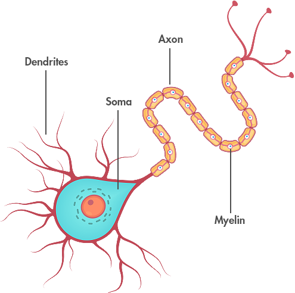 Figure 1: The basic structure of a biological neuron
Source: CNS, 2020
Artificial neural networks have been modelled on these principles, attempting to mimic this complex system,
and much like the human brain, they are capable of handling complex data. Whilst the specific applications
can vary greatly, there are commonalities between these different typologies in that that there are usually
three types of nodes:
●An input node, which receives the information
●A processing node, which can be hidden
●A result node that outputs the final results
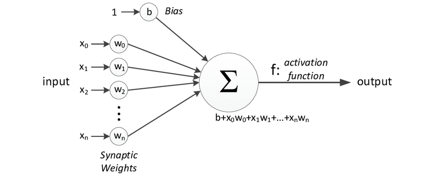 Figure 2: The structure of a basic perceptron
Source: Zafeirios, 2011
A perceptron (Fig. 2) is a simple model that can take in multiple inputs, multiply each by a weight (which shows the strength of a particular node) and a bias, which may trigger the activation function. This activation function decides whether a neuron should be fired by calculating the weighted sum, applying the bias and passing on a result. It is also the key to introducing non-linearity into the model, which then enables learning and the ability to model complicated input data such as speech for without it, the model would simply be a linear regression model.
There are a variety of activation functions, which can be grouped into linear and nonlinear functions (Table 1). The intelligence of ANNs starts to become evident in the latter function group enabling backpropagation (a supervised learning technique) and multi-layer neural networks, leading to deep neural networks.
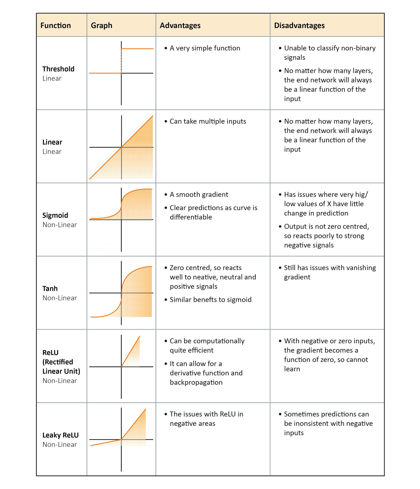 Table 1: A comparison of various linear and non-linear activation functions
There are multiple structures that can be used depending on their desired purpose, some common structures are as follows:
A simple ANN, with data passing through in one direction from the first input layer, through progressive layers until it reaches the output. The number of neurons and layers needed can be determined by validation and calibration, but once set up, the ANN can typically be suitable for a range of applications.
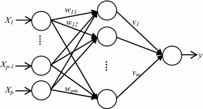 Figure 3: A basic feed forward network structure
Source: Suhartono, 2017
These networks have been primarily used for image analysis and some other classification applications such as speech. They contain one or more convolutional layers that specialise in preserving spatial relationships between pixels to be able to excel at object recognition. Through taking an input image, the network breaks down the image into overlapping tiles (subsampling), which are then processed into a neural network to read the outputs of the image using ReLU activation function and the convolution algorithm. This is repeated for all the tiles of the image, with the strongest correlation across the connected tiles being output, predictions are given based of what is found.
This type of network operates by saving the outputs of particular layers and feeding them back into the input with the goal of better predicting the outcome of the layer. Feed forward structure is used on the initial layer, however following layers then utilise the recurrent neural network process. They combine 2 important properties: the ability to efficiently store information on the past states of the neuron and update this information dynamically. This ability to self-learn and improve weighted outputs in future time steps make RNNs ideal for predictive applications.
The strength of neural networks come from their ability to “learn” through the use of training data. There are typically two styles of training:
As the name implies, supervised training typically requires a “teacher” where a large dataset of inputs and outputs are required in order adjust the weights of the various neurons so that the network outputs better resemble the desired outputs over time. When selecting the input data, it is important to ensure that the selection is relevant to the system being modelled in order to train the network on the correct influencers of the system.
In unsupervised training, only input data is required and the network automatically adjusts the weights so
that it can better classify and group data.
Initial weights are given an arbitrary number and by exposing them to particular inputs, the weights associated
with each neuron can adjust each time a new set is exposed to the network. This data can also be noisy, and the
complex interconnected neurons can still classify patterns on which they have not been previously exposed to.
After each set, the results are compared against the desired outputs, and errors can be backpropagated through
the system, adjusting to correct them.
This then happens repeatedly during the training process in order to continually refine the connection weights
until it has been calibrated sufficiently. The number of neurons in the network is also important, too many and
increased computing power would be required, as well as the risk of overtraining, also known as overfitting.
This mechanism trains the network to recognise the patterns too strongly and begins over fitting data in the
model resulting in more extreme minima and maxima. Regularisation of the network is thus important, focusing
on maintaining the balance between avoiding an overly complex model, whilst still having enough neurons to
achieve a good fit.
When training a neural network, it’s common to split the training data set into 3 parts: 70% constitutes the initial training data to weight the neurons through iterative learning. 15% is then used to validate and calibrate network, and the final 15% is used for testing the calibrated network against desired outputs to see how well it performs.
The development of ANN began approximately 70 years ago (McCulloch and Pitts 1943), with the intention of replicating
the biological functions of the human brain. The McCulloch-Pitts model was a simple artificial neuron, but it held
great computational power, and paved the way forward for more advanced systems. Bernard Widrow and Marcian Hoff developed
the first ANN that was applied to a real-world problem in 1959. They developed the ADALINE and MADALINE (Many ADALINE)
models for adaptive filters that eliminated echo on telephone lines (Widrow & Winter 1988). There was a period where
research into ANNs slowed down, however it was reinvigorated in the early 80s when John Hopfield presented a paper on
the capabilities of networks.
In conjunction with developments in the theoretical world of neural networks, advances in hardware have also aided in
their implementation. The co-founder of Intel, Gordon Moore, made an observation that the number of transistors per
square inch on integrated circuits would double every 2 years, resulting in considerable performance increases (Fig. 4) over time.
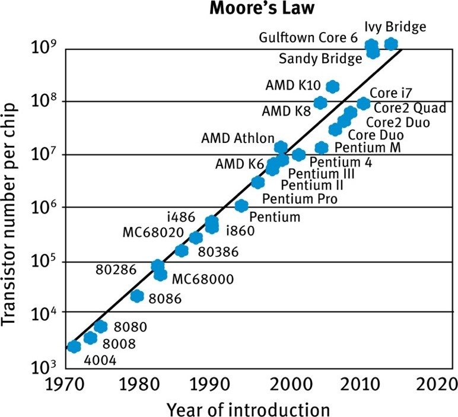 Figure 5: A graph showing number of transistors in chipsets over time, demonstrating Moore’s Law
Source: Ostendorf, 2015
The continuous advances in computing power meant that barriers to implementing more complex networks could be reduced. Once paired with the advances in the theory of ANNs, there have been a number of implementations in various industries.
“Go” is an ancient board game originating from China approximately 3,000 years ago. Two players take turns placing their
respective stones (white or black) onto a board, with the goal of surrounding and capturing their opponent's stones.
Although a simple concept, there are 10170 possible board configurations, making it far more complex than other board
games such as chess, and often viewed as one of the most challenging board games for an ANN due to the vast possible
outcomes and difficulty in evaluating certain moves (Silver et al., 2018). The team at Deepmind created an AI known as
AlphaGo Zero, which through certain reinforcement techniques, could become its own teacher. The ANN plays games against
itself, with no specific knowledge of strategies in the game beyond the basic rules, using a search algorithm to predict
moves and the eventual winners. As it plays more games, the ANN is recombined with the search algorithm and each iteration
improves the performance of the system.
When pitted against champion player Lee Sedol, AlphaGo made an unconventional move in the second game of 5, now labelled as
Move 37. At the time of this move, analysts and spectators assumed that it was a mistake, however as the game went on it
became clear that AlphaGo Zero was using a strategy not familiar to humans as it went on to win the game, and the series.
Through allowing the ANN to develop and play against itself, AlphaGo had discovered complex strategies that weren’t constrained
by human bias (Silver, 2017)
Another recent breakthrough came with Nvidia’s advancement in the architecture for a generative network (Karras et al., 2018),
which enabled the use of “style transfers” whereby certain facial features could be weighted and targeted to give greater
control over a composite image (Fig. 5). High level (coarse) aspects could be controlled such as pose, hair style and face
shape, but also finer details such as eyes, hair and lighting could also be imparted.
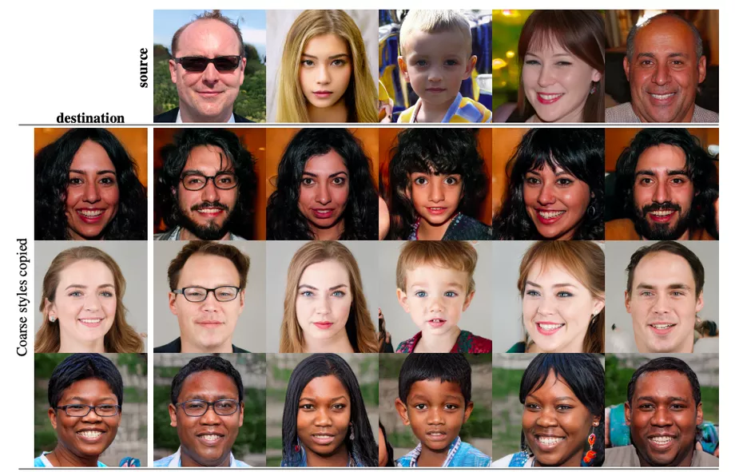 Figure 5: An example of style transfer with selectively chosen features to create a composite face from two base images
Source: Karras et al., 2018
These are but two examples of the many that have been utilised in recent years. Others include 3D Reconstruction (Eslami et al., 2018), Autonomous Driving (Kocić, 2019) and Natural Language Processing with Image Recognition (Vinyals, 2015).
ANNs have also found themselves applied within climate models. Their ability to take in complex data and find correlations can be quite useful when attempting to model complex systems and predict trends for forecasting scenarios. The applications of ANN in hydrology for example have been well documented by the ASCE Committee (2000), highlighting key areas where ANNs can be applied such as rainfall runoff, streamflows, water quality, groundwater and precipitation estimation. A lot of these applications have commonalities such as complex influences with non-linear responses which present difficulties for mechanistic or other empirical models to predict outcomes. For example, water quality is influenced by flow rate, contaminant load, medium of transport, water levels, starting conditions and other site-specific parameters (ASCE Committee, 2000). Sarkar and Panday (2015) attempted to model dissolved oxygen (DO) concentrations in the Yamuna river downstream of Mathura city in India. DO concentrations had been used as the main indicator of stream water quality and is pivotal when determining what pollution controls should be implemented. Input data from monthly records was utilised for the parameters, including flow discharge, temperature, pH, biochemical oxygen demand and DO, particularly because these datasets were available for upstream, central and downstream points along the Yamuna around Mathura. Three different ANNs were used to evaluate varying combinations of the three sites, ANN-I used all 3 sites except DO data at the downstream site (due to lack of available data), ANN-II used data inputs from the upstream and central sites and ANN-III used all data at only the upstream sites. The ANN was then structured as a feed-forward network with back propagation and took 48 patterns of randomly selected data from what was available, with the remaining 24 reserved for validation. From the models created, ANN-II showed the highest correlation to the observed DO fluctuations (R2<0.9) (Fig. 6) with ANN-III having the lowest correlation (R=0.654 after validation). The authors attributed this disparity due to the lack of input data which could explain the physical processes of the modelled system, highlighting the importance of data selection to be fed into the model.
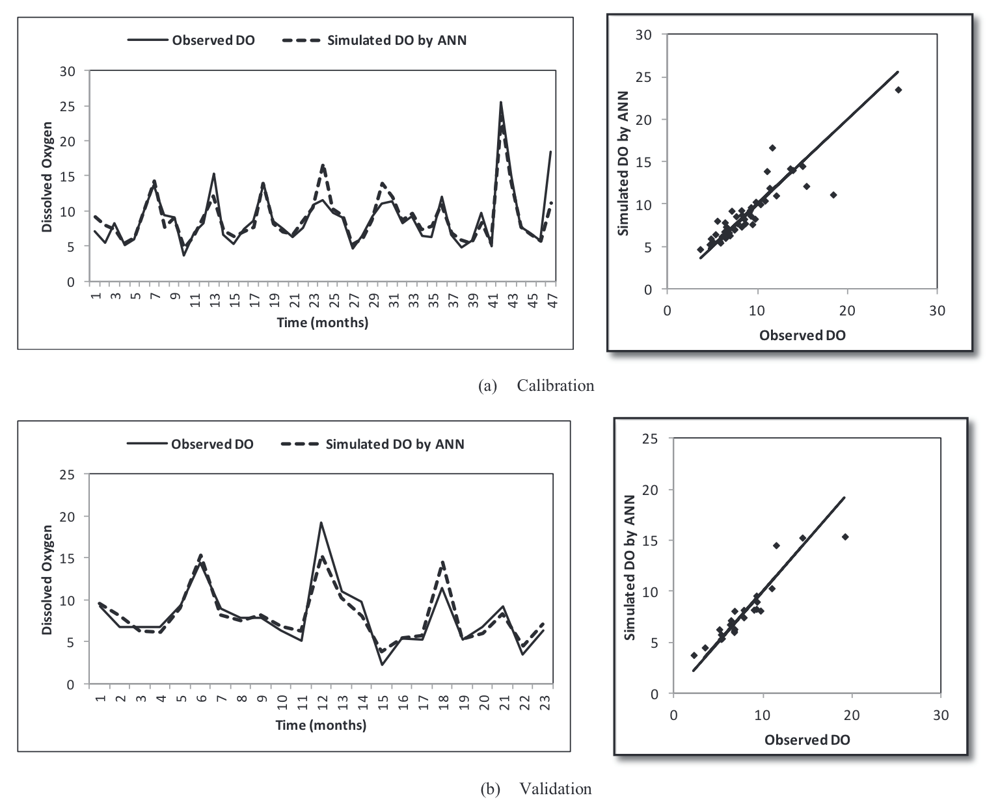 Figure 6: Comparison of the simulated DO values from the ANN and the observed values for ANN-II in calibration (a) and validation (b)
Source: Sarkar and Panday, 2015
Jimeno-Sáez et al. (2018) studied the difference between SWAT (Soil and Water Assessment Tool, a traditional modelling technique used in hydrological analysis) and ANNs to model daily runoff. Two contrasting watersheds were chosen within Spain, a north-western site with a typical Atlantic climate and south-eastern site which has a typical Mediterranean climate. Flow rates were also segmented in to 5 categories (very low, low, medium, high and very high), in order to understand the effectiveness of the two modelling techniques at different discharge events. A feed forward network was created that utilised backpropagation for iterative improvement, and sensitivity analysis was carried out on available parameters to determine which should be selected for the network. Input variables selected for the ANN were daily precipitation, daily temperature, precipitation of the previous n days, total rainfall of the preceding n days and mean temperature over the previous n days. On the other hand, SWAT required 18 input data points. The results indicated that both models provided an adequate representation of the output run off (R2 0.49-0.61) (Fig. 7) however they found variation at the different flow rates. SWAT was found to be more accurate at lower flow rates and ANN was superior at higher flow rates.
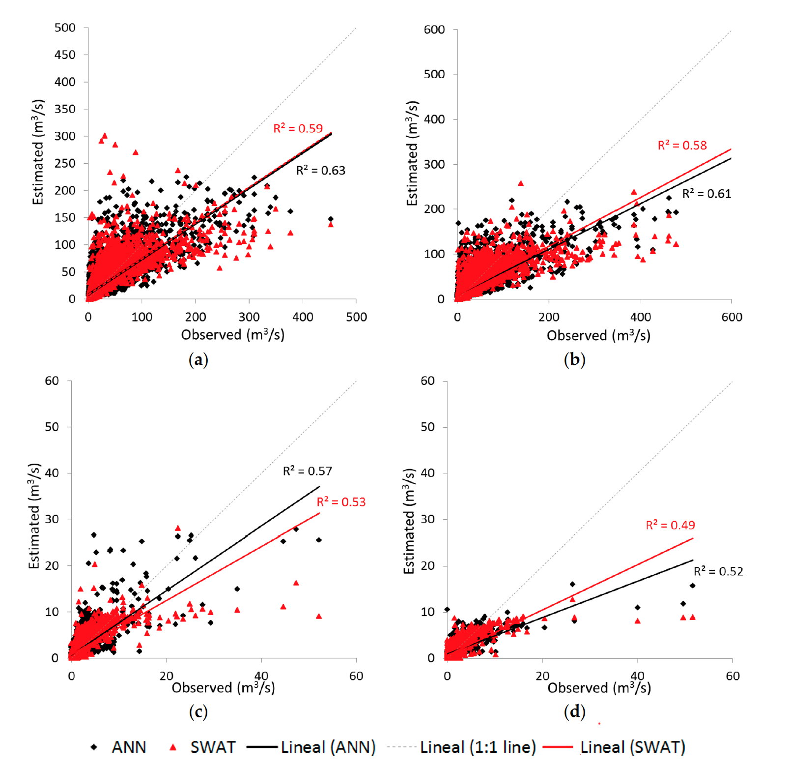 Figure 7: A comparison of stream flow for the ANN model, and SWAT model for the NW site in training (a), and validation (b), and the SE site in training (c) and validation (d)
Source: Jimeno-Sáez et al., 2018
French et. al (2017) explored the application of ANNs in short term tidal surge forecasting, using data from North Sea surges collected at
multiple locations in the UK. Being able to accurately predict and warn for flooding can help effectively implement protective measures
and limit damage. Furthermore, the limits to bathymetric resolution and their consequential limits to modelling surges in estuaries can be problematic.
A feed forward, supervised ANN was set up using the sigmoid activation function that was trained on data from multiple sites north of
the selected location (Immingham). Through trial and error, the network size was limited to 30 neurons in order to prevent overtraining.
The output results had good accuracy, with the ANN achieving a R<0.9. A specific flood event was selected and modelled from Dec 2013,
with the comparison of the observed surge residual, the standard numerical model and the ANN (Fig. 8), highlighting the potential for a
relatively simple ANN to perform well versus a numerical model at forecasting major surge events. The limitation of the ANN for short term
forecasting was highlighted and the authors also noted that improvements would be necessary due to the underprediction of peak water levels
with the ANN.
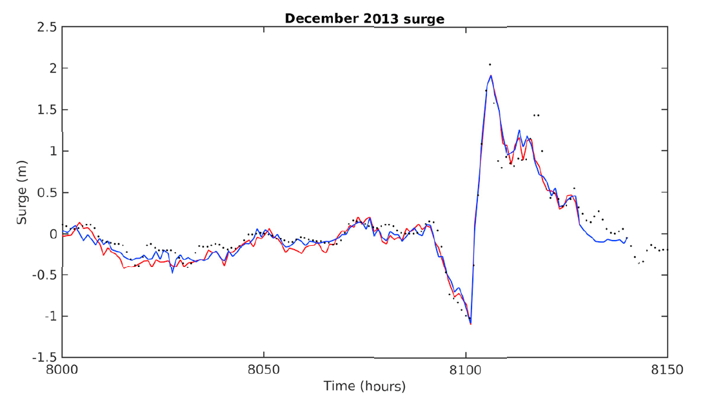 Figure 8: Observed surge (red line), ANN model (blue line) and standard numerical model (black dots) at Immingham during December 2013 surge
Source: French et al., 2017
In a similar case, Lee (2009) investigated forecasting of typhoon storm surges in Taiwan using ANNs. A feed forward network with backpropagation was built, taking in four key inputs that influenced the tidal surges: pressure, wind speed, wind direction and astronomical tide. Using data from 4 stations on the coasts of Taiwan, data around 3 typhoon events were selected to train the neural network to develop the optimum structure, resulting in a network of 6 neurons in a single hidden layer. Parallel to this model, a traditional finite volume model (FVM) was created to compare against the performance of the ANN.
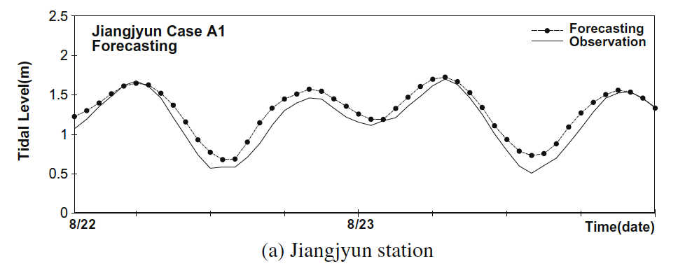 Figure 9: The forecast tidal surge using an ANN in comparison to the observed levels of the Krovanh typhoon at Jiangjyun
Source: Lee, 2009
When compared to the observed hourly tidal surge data the ANN generally performed well (Fig. 9). The storm surge deviation was also compared for the four stations for the BPN, FVM and observed data for one typhoon event (Fig. 10). The BPN had a higher deviation than the observed, which Lee suggests could be a fault of the model (potentially the architecture or the learning mechanisms). However, he also notes that the FVM has a much lower accuracy than the BPN, with the likely cause being the typhoon path. As they did not directly hit Taiwan, the calculations surrounding the wind fields in the FVM may not be accurate enough to predict tidal surges.
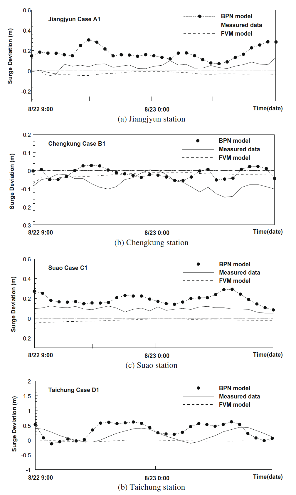 Figure 10: Comparison of the surge deviations for the ANN, numerical method and observed data for the Krovanh typhoon at the 4 stations
Source: Lee, 2009
ANNs are a 70-year-old technology that has seen resurgence through a better understanding, improved computing power and more accessible data.
Based on the human brain, they function as a cluster of neurons that can be structured in specific networks to model complex problems. Through
iterative learning and with suitable datasets, ANNs are powerful tools in modelling various aspects of climate mechanisms. When using ANNs,
some important points to consider are:
●The overall structure of the network - there are a variety of network structure designed for specific tasks. When modelling a system
where observed data is available for example, feed forward networks with backpropagation are highly viable
●The size of the network – increasing the number of neurons and hidden layers in a network can help improve the fit of the model,
and introduce non-linearity, however, also runs the risk of greater computational demand and overfitting the data
●Selection of input data - An understanding of the system being modelled is essential, as it is important not to flood the network
with too much input data. Only the inputs that strongly influence the measured output should be included
Whilst ANNs have many strengths, one of their greatest weaknesses is their black box methodology, which presents challenges in
understanding how they are simplifying complex systems and arriving at their results. Nevertheless, when employed carefully, ANNs
can compete with and even outperform some traditional modelling techniques for climates predictions.
Agatonovic-Kustrin S, Beresford, R. 2000. Basic concepts of artificial neural network (ANN) modeling
and its application in pharmaceutical research. Journal of Pharmaceutical and Biomedical Analysis 22, 717-727.
ASCE Task Committee. 2000. Artificial neural networks in hydrology. I: preliminary concepts. J Hydrologic Eng. 5:115-23.
ASCE Task Committee. 2000. Artificial neural networks in hydrology. II: hydrologic appplications. J Hydrologic Eng. 5:124-137.
Haykin S. 1994. Neural networks: A comprehensive foundation. 2nd. New York: Prentice-Hall.
Chiang Y-M, Chang L-C, Tsai M-J, Wang Y-F, Chang FJ. 12010. Dynamic neural networks for real-time water level predictions of sewerage systems-covering gauged and ungauged sites. Hydrol. Earth Syst. Sci. 14, 1309–1319.
French JR, Mawdsley R, Fujiyama T, Achuthan K 2017. Combining machine learning with computational hydrodynamics for prediction of tidal surge inundation at estuarine ports. Procedia IUTAM 25, 28-35
Kim DH, Kim JY, Hur DS. 2014. Artificial neural network based breakwater damage estimation considering tidal level variation. Ocean Engineering 87, 185-190. http://dx.doi.org/10.1016/j.oceaneng.2014.06.001
Lee TS. 2009. Predictions of typhoon storm surge in Taiwan using artificial neural networks. Advances in Engineering Software 40, 1200–1206.
Nitsure SP, Londhe SN, Khare KC. 2014. Prediction of sea water levels using wind information and soft computing techniques. Appl. Ocean Eng 46, 344-51.
Nooteboom PD, Feng QY, López C, Hernández-García E, Dijkstra HA. 2018. Using network theory and machine learning to predict El Niño. Earth Syst. Dynam. 9, 969–983.
Sztorbryn M. 2003. Forecast of storm surge by means of artificial neural network. Neth J Sea Res 49, 317-22.
Jimeno-Sáez, Patricia & Senent-Aparicio, Javier & Pérez-Sánchez, Julio & Pulido-velazquez, David. (2018). A Comparison of SWAT and ANN Models for Daily Runoff Simulation in Different Climatic Zones of Peninsular Spain. Water. 10. 10.3390/w10020192.
Sarkar, Archana & Pandey, Prashant. (2015). River Water Quality Modelling Using Artificial Neural Network Technique. Aquatic Procedia. 4. 1070-1077. 10.1016/j.aqpro.2015.02.135.
Silver, D., Huang, A., Maddison, C. et al. Mastering the game of Go with deep neural networks and tree search. Nature 529, 484–489 (2016) doi:10.1038/nature16961.
David silver, D.S. 2017. AlphaGo Zero: Starting from scratch. [Online]. [18 December 2019]. Available from: https://deepmind.com/blog/article/alphago-zero-starting-scratch.
Eslami, S. & Jimenez Rezende, Danilo & Besse, Frederic & Viola, Fabio & Morcos, Ari & Garnelo, Marta & Ruderman, Avraham & Rusu, Andrei & Danihelka, Ivo & Gregor, Karol & Reichert, David & Buesing, Lars & Weber, Theophane & Vinyals, Oriol & Rosenbaum, Dan & Rabinowitz, Neil & King, Helen & Hillier, Chloe & Botvinick, Matt & Hassabis, Demis. (2018). Neural scene representation and rendering. Science. 360. 1204-1210. 10.1126/science.aar6170.
Kocić, J., Jovičić, N., & Drndarević, V. (2019). An End-to-End Deep Neural Network for Autonomous Driving Designed for Embedded Automotive Platforms. Sensors (Basel, Switzerland), 19(9), 2064. doi:10.3390/s19092064
Vinyals, Oriol & Toshev, Alexander & Bengio, Samy & Erhan, Dumitru. (2015). Show and tell: A neural image caption generator. 3156-3164. 10.1109/CVPR.2015.7298935.
Ostendorf A, König K. Tutorial: Laser in material nanoprocessing. In: König K, Ostendorf A, editors. Optically Induced Nanostructures: Biomedical and Technical Applications. Berlin: De Gruyter; 2015 Jun 23. Fig. 3, “Moores’ Law” was predicted by the co-founder of Intel®, Gordon Moore, in 1965 and slightly corrected in 1975. The graph shows its validity until today. Available from: https://www.ncbi.nlm.nih.gov/books/NBK321721/figure/oin_tutorial.F3/
Karras, Tero & Laine, Samuli & Aila, Timo. (2018). A Style-Based Generator Architecture for Generative Adversarial Networks.
David silver, D.S. 2018. AlphaZero: Shedding new light on chess, shogi, and Go. [Online]. [18 December 2019]. Available from: https://deepmind.com/blog/article/alphazero-shedding-new-light-grand-games-chess-shogi-and-go
McCulloch, W.S., Pitts, W. A logical calculus of the ideas immanent in nervous activity. Bulletin of Mathematical Biophysics 5, 115–133 (1943) doi:10.1007/BF02478259
Widrow, B., Winter, R. Neural nets for adaptive filtering and adaptive pattern recognition. Computer 21, 25-39 (1988) doi:10.1109/2.29
Adam Geitgey, A.G. 2016. Machine Learning is Fun! Part 3: Deep Learning and Convolutional Neural Networks. [Online]. [18 December 2019]. Available from: https://medium.com/@ageitgey/machine-learning-is-fun-part-3-deep-learning-and-convolutional-neural-networks-f40359318721
Sagar sharma, S.S. 2017. Activation Functions in Neural Networks. [Online]. [18 December 2019]. Available from: https://towardsdatascience.com/activation-functions-neural-networks-1cbd9f8d91d6
Dishashree gupta, D.G. 2017. Fundamentals of Deep Learning – Activation Functions and When to Use Them?.[Online]. [18 December 2019]. Available from: https://www.analyticsvidhya.com/blog/2017/10/fundamentals-deep-learning-activation-functions-when-to-use-them/
Fountas, Zafeirios. 2011. Imperial College. Spiking Neural Networks for Human-like Avatar Control in a Simulated Environment.
Centre for Neuro Skills (CNS). 2020. Neuronal Firing. [Online]. [2 January 2020]. Available from: https://www.neuroskills.com/brain-injury/neuroplasticity/neuronal-firing/
Suhartono, Saputri P.D., Amalia F.F., Prastyo D.D., Ulama B.S.S. (2017) Model Selection in Feedforward Neural Networks for Forecasting Inflow and Outflow in Indonesia. In: Mohamed A., Berry M., Yap B. (eds) Soft Computing in Data Science. SCDS 2017. Communications in Computer and Information Science, vol 788. Springer, Singapore